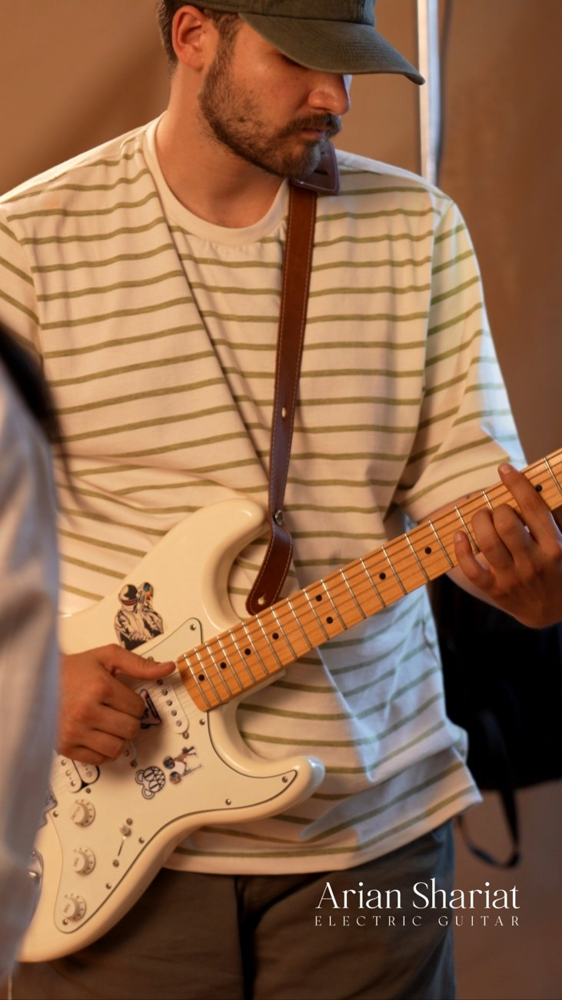
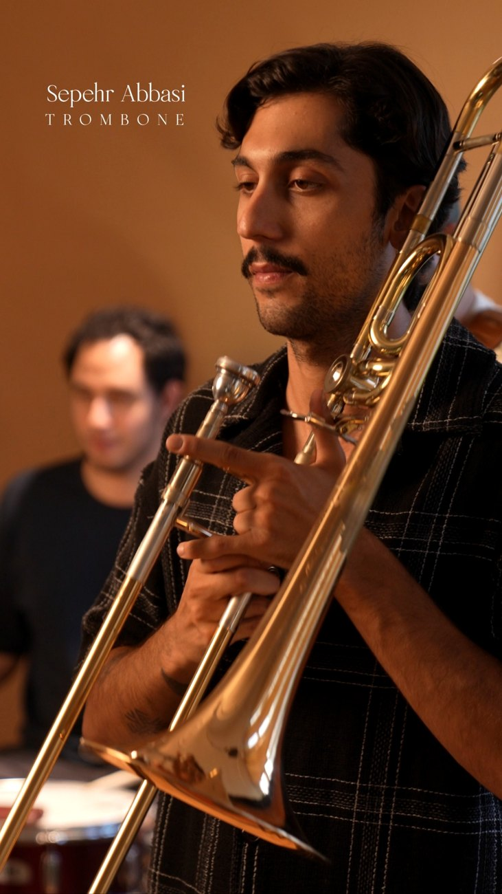
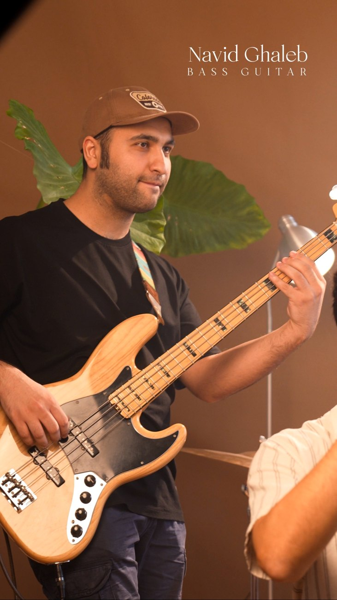

درباره ما
جیلیز ویلیز از سال ۱۴۰۳ فعالیتش را شروع کرد؛ گروهی آلترناتیو/فیوژن که توسط آرین شریعت، نوازنده گیتار و خواننده، و سپهر عباسی، نوازنده ترومبون، شکل گرفت. بعدتر ماهان محمدی با ترومپت، نوید غالب با بیس و صالح خان محمدی با درامز به گروه اضافه شدند.
کار های منتشر شده
Iran Khube
03 / MEMBERS
اعضا


